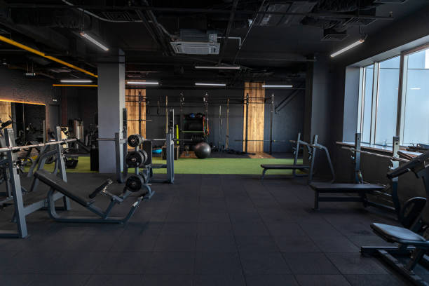
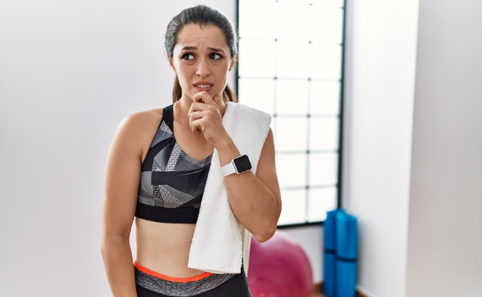

Выжить в спортзале
Гид по тренажёрному залу для тех, кто решил заняться спортом, но пока боится переступить порог фитнес-клуба. Тут не будет спортивного сленга, сложных упражнений и обсуждений, протеин какой марки лучше приобрести.

Гид по тренажёрному залу для тех, кто решил заняться спортом, но пока боится переступить порог фитнес-клуба. Тут не будет спортивного сленга, сложных упражнений и обсуждений, протеин какой марки лучше приобрести.

Все мы знаем, как тяжело бывает начать что-то новое. Особенно если дело касается спорта, на который не хватает времени и сил абсолютно у каждого.
«Выжить в спортзале» — проект как раз для тех, кто постоянно откладывает посещение зала на завтра. Мы объясняем простым языком, почему важно решиться на свою первую тренировку, как правильно подобрать зал и выбрать абонемент, что необходимо иметь при себе на занятиях и как не бросить спорт через неделю.
Ни для кого не секрет, что спорт очень полезен для здоровья. Об этом нам твердят с самого детства.
Формула нормальной жизни не обходится без спорта.
Майкл Фелпс, американский пловец, единственный в истории спорта 23-кратный олимпийский чемпион
Но задумывались ли, почему физической активности приписывают такую важную роль? Давайте разбираться.
Физическая активность — основа здорового образа жизни. Благодаря физическим нагрузкам тренируются сердечные мышцы, улучшается кровообращение и снабжение мозга кислородом, ускоряется метаболизм. Короче говоря, спорт продлевает жизнь.
Согласно данным ВОЗ, регулярная физическая активность соотносится с:
Если вас это не убедило, посмотрите ролик, в котором подробно описано, какую пользу могут принести ежедневные тренировки.
Спорт помогает не только телу. Регулярная физическая активность снижает уровень стресса и улучшает настроение: во время тренировок вырабатываются эндорфины – гормоны, которые называют гормонами счастья
.
Кроме того, движение помогает бороться с тревогой и бессонницей, повышает концентрацию внимания и даёт ощущение контроля над собственной жизнью. Для многих людей именно спорт становится способом перезагрузиться
после тяжёлого дня.
Подробнее о связи физической активности и психического здоровья можно узнать на портале WebMD.
Возможно, нам удалось убедить вас в необходимости физической активности, но вы по-прежнему не можете записаться на первую тренировку. Давайте попробуем развеять основные страхи и сомнения новичков.

Посещать спортзал можно с 14 лет, а вот верхней возрастной границы не существует. Физическая активность полезна и в 20, и в 60. Важно подобрать нагрузку по силам и при необходимости посоветоваться с врачом.
На самом деле, большинство посетителей заняты собой и своими тренировками. Более того, новички вызывают у опытных скорее уважение — они ведь тоже когда-то начинали.
Нет. Первое занятие, которое во многих фитнес-клубах бесплатное, можно провести с тренером: он покажет тренажеры и поможет подобрать нагрузку. Специальная подготовка не требуется.
В джинсах, конечно, в спортивный зал прийти не получится, но достаточно удобной одежды, не сковывающей движения, и любой спортивной обуви. На старте профессиональная экипировка не требуется.